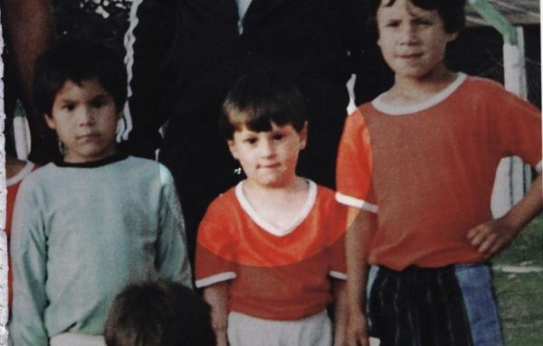
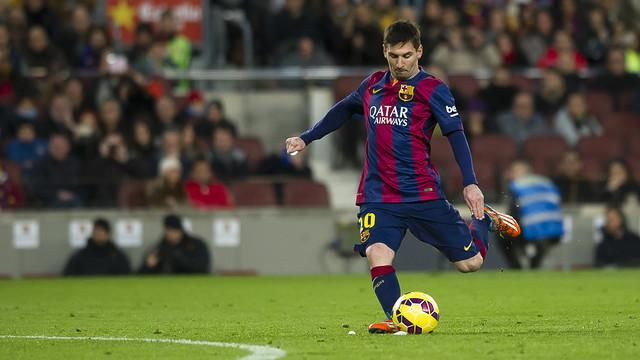
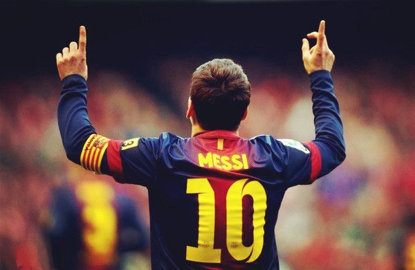
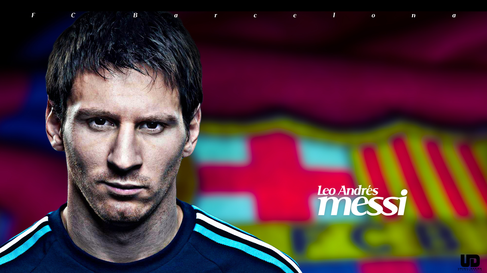
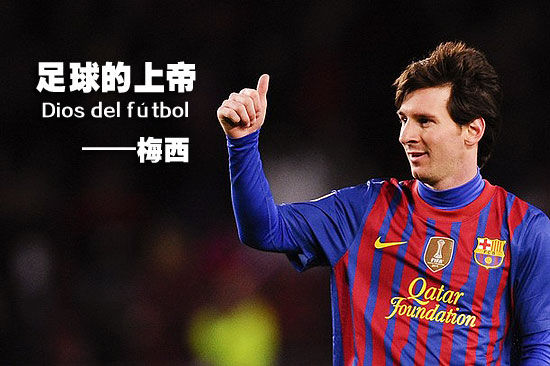

梅西
利昂内尔·安德雷斯·梅西·库西提尼（西班牙语：Lionel Andrés "Leo" Messi Cuccittini，1987年6月24日－），简称利昂内尔·梅西（西班牙语：Lionel Messi），生于阿根廷圣菲省罗萨里奥，是目前世界范围内最炙手可热的球星之一，现效力于西甲豪门巴塞罗那队。
利昂内尔·安德雷斯·梅西·库西提尼（西班牙语：Lionel Andrés "Leo" Messi Cuccittini，1987年6月24日－），简称利昂内尔·梅西（西班牙语：Lionel Messi），生于阿根廷圣菲省罗萨里奥，是目前世界范围内最炙手可热的球星之一，现效力于西甲豪门巴塞罗那队。
梅西年少时已加入巴塞罗那青训营拉玛西亚，出道至今职业生涯一直效力巴塞罗那，并随队横扫多项赛事冠军，包括四次欧洲冠军联赛冠军和七届西班牙甲级联赛冠军，获得辉煌的俱乐部成就。梅西被媒体、名宿和球迷广泛认定为现今世界最佳球员。亦被马拉多纳视为“接班人”。
2009年，梅西以主力射手身份协助巴塞罗那连获西甲联赛、西班牙国王杯、欧洲冠军联赛三项冠军，成为西班牙足球史及队史上第一个三冠王球队。接着参加下半年的三项专属于冠军之间的赛事，再度荣获西班牙超级杯、欧洲超级杯、以及俱乐部世界杯三大锦标，协助巴塞罗那完成世界足坛绝无仅有的一次“六冠王”伟业。2011年，梅西协助巴塞罗那再夺得五项冠军，成为该年的“五冠王”。2010年、2011年、2012年，梅西连续取得首三届国际足联金球奖，总计梅西连续四年获此殊荣。2015年，梅西协助巴塞罗那再夺得五项冠军，成为该年的“五冠王”，再获国际足联金球奖，成为历史上首位夺下五届金球奖和世界足球先生（不论合并前后）的球员。
2011年，梅西以24岁之龄成为巴塞罗那足球俱乐部历史上，在正式比赛中进球数最多的球员。至今，梅西已在巴塞罗那所有比赛攻入超过300球。他亦是西甲历史上进球最多的球员。
国家队方面，27岁的梅西以队长身份带领阿根廷队在2014年世界杯过关斩将，连续四场成为全场最佳球员，阿根廷队决赛仅败于德国队，屈居亚军。梅西赛后获颁世界杯金球奖。
2014年，梅西在巴塞罗那，与内马尔及苏亚雷斯组成“MSN组合”。2014-2015赛季，“MSN组合”总共攻入122球，公认为史上最强大恐怖的锋线组合。协助巴塞罗那成为史上第一支两夺三冠王的球队。
梅西在国家队的得分不多常被诟病其实是因为队内其他锋线及中场球员表现不力，迫使梅西必须频繁回撤拿球是主要原因，在阿根廷国家队的实战里梅西担任中场稳住局面的时间比担任前锋的时间多出非常多。

梅西出生于南美洲的阿根廷，并加入了当地俱乐部纽韦尔老男孩体育俱乐部的少年队。在他11岁时被医生诊断出患有荷尔蒙生长素分泌不足，梅西一家无法长期负担高额的治疗费用，纽韦尔老男孩只同意每个月为梅西支付400美元，再加上当时的阿根廷正处于经济困局。加基奥利是梅西首位经理人，他让梅西加盟了巴萨。加基奥利谈及梅西，“首先俱乐部要帮他继续治疗生长疾病，费用很昂贵。其次，俱乐部还要给梅西父亲安排工作。我们联系过皇家马德里和马德里竞技，但都没有结果，最终他去了巴萨。我在西班牙接梅西看他走下飞机时，我张大了嘴非常吃惊。当时我认为他太瘦弱了，他会面对很多挫折。”于是梅西家人于2000年举家迁到西班牙，当时13岁的梅西身高只有1.4米（约4尺7吋）。
搬到西班牙后，梅西开始融入当地生活，其后加盟了西甲豪门巴塞罗那，他们承诺替梅西提供治疗费用（约每月900美元），并让其得到青训练习的机会。随后巴塞罗那支付了梅西治疗所需的全部费用，效果也是显著的。2001年11月，接近一年的治疗让梅西的身高增加了16厘米，体重增加了9公斤；但在巴塞罗那，梅西仍然只能参加训练，不可以参加正式比赛。因为对梅西父亲带走梅西不满，纽韦尔老男孩体育俱乐部主席拒绝出示转会证明。一直到2002年2月15日，在国际足联的干预下，梅西才在西班牙足协正式注册成为拉马西亚（巴塞罗那俱乐部的青训营）球员。
2002-03赛季，梅西所在级别的球队中还有中卫皮克和中场法布雷加斯，梅西在30场比赛中打进37球，成为该赛季的最佳球员和最佳射手。

2003年10月14日，已经年满16岁的梅西与巴萨签订了人生中第一份职业合同：合同截至2012年，毁约金高达3000万欧元，同年的11月15日，时任巴塞罗那主帅里杰卡尔德将梅西召入次日与波尔图友谊赛的大名单，梅西在第75分钟替补出场。
在2003年-04年赛季，他为巴塞罗那B队参赛，整季上场5场，可是并没有进球。
2004－05赛季
梅西于2004年10月16日正式为巴塞罗那一队上场作赛，打破了最年轻在西甲比赛的巴萨球员的纪录。2005年5月1日在联赛中对阿尔巴萨特中由罗纳尔迪尼奥助攻攻入西甲联赛第一个进球，以17岁10个月零7天打破了俱乐部最年轻进球者的纪录。 2004-05赛季，梅西参加了9场联赛。
梅西在2005年的世青杯出现转捩点，梅西在该届比赛中大放异彩，共射入6球，其中两球更是于决赛中攻入，最终不仅协助国家队历史上第五次封王，更夺得该届赛事的最佳射手与最有价值球员奖项。
其后巴塞罗那开始重用梅西，梅西得到了一份续至2014年的新合约。
2005－06赛季
在2005年至2006年的联赛中，巴塞罗那作客对西甲另一支强队皇家马德里时，梅西在球场上的走动间接削减了敌方球队的进攻，结果皇家马德里在主场以0:3不敌巴塞罗那。
2006－07赛季
2007年3月12日，梅西于2006-07赛季中次回合的“世纪德比”中展示出精湛的球技，皇家马德里作客三度领先巴塞罗那，但主队凭梅西大演帽子戏法三度追平，最终以三比三逼和，他不但成为继前巴西国脚罗马里奥后十三年来首位在国家德比中连中三元的巴塞罗那球员，更是历史上第6位在比赛中独中三元的球员。同赛季梅西在2007年4月18日西班牙杯4强首回合对赫塔费的赛事之间，由后场盘过5名赫塔费球员（包括守门员），然后窄角度射入空门，协助巴塞罗那以5:2大胜。不少人把这个进球与马拉多纳在1986年世界杯足球赛中射入的世纪最佳进球相题并论。但还不仅如此，梅西很快的又拷贝了马拉多纳的另一个代表作“上帝之手”。2007年6月9日联赛主场对上西班牙人时，以与上帝之手模样极为相似的手球将球打进球门。许多的媒体与球迷以这两个进球为凭证，把梅西认作是马拉多纳完美的继承人。2006-07赛季，梅西出场33次打进17球。梅西在2007年的欧洲足球先生和世界足球先生中分别名列第三和第二。
2007－08赛季
尽管梅西于2007-08赛季受到伤病的困扰，梅西在40场比赛打进16球，巴塞罗那也在此赛季也显现出过多的弊病，决意在下赛季的阵容方面大量进行改造重建。
2008－09赛季
2008-09赛季时，穿上了离去的罗纳尔迪尼奥所留下的10号球衣，成为了红蓝军新一代的领军人物，2008年的欧洲足球先生和世界足球先生中，梅西都名列第二，紧随克里斯蒂亚诺·罗纳尔多其后。在2009年2月1日联赛做客对上桑坦德竞技时，为巴塞罗那射进了俱乐部历史上第5000颗进球。2009年欧洲冠军联赛决赛中，继埃托奥攻入致胜球后，梅西以职业生涯中第一个头球同时也是第一个对上英格兰足球俱乐部的进球，帮助巴塞罗那以2-0击败曼联，捧起了他个人的第二座欧冠奖杯。梅西在这个赛季总共射进38球，更以9球成为欧联最佳射手。随后以最高姿态力压克里斯蒂亚诺·罗纳尔多夺得欧洲足球先生以及世界足球先生。同年为巴塞罗那赢得六冠王，实现了“前无古人，后无来者”的史上唯一大满贯。
2009－10赛季
2009-10赛季，梅西进球数一场接着一场刷新。赛季末结算时，梅西一共上演了四次帽子戏法（过往有两次，至此生涯共六次），其中包括了在2010年4月6日于欧冠四分之一决赛中主场对阵阿森纳，上演“大四喜”。最终分别以34颗进球与8颗进球雄崌西甲与欧冠射手榜首位，是为双料射手王，单季进球总数再创生涯新高，帮助巴塞罗那在西甲完成二连霸，完全奠定了新一代诺坎普国王的地位，但在欧冠四强败在国际米兰之下，未能卫冕成功。尽管如此，梅西追平了罗纳尔多在1996年到1997的47球记录。
2010－11赛季
梅西在季前的西班牙超级杯第二位回合，对阵塞维利亚上演帽子戏法。赛季第一轮，巴萨客场迎战桑坦德竞技，梅西开场三分钟便取得进球，但第二轮巴萨主场爆冷输给升级马埃尔库莱斯，虽然之后对阵马德里竞技取得进球，但因对方后卫严重犯规而休养两个星期。复出后的第一场对阵马略卡射进球，梅西的进球潮一发不可收拾，之后八场联赛攻进十个球，更奉献多个助攻。第13轮，巴塞罗那主场迎战死敌皇家马德里，梅西在“世纪德比”当中奉献两个助攻给比利亚，最终以大比分5-0战胜对手，创造了近15年来国家德比巴萨在主场以大比分战胜对方，巴萨从第二名升到榜首。从第6轮开始到23轮，巴萨更创造联赛16连胜的记录。第31轮梅西对阵阿尔梅里亚当中射进两球，他追平了上个赛季的47球记录，联赛助攻更达到17个，而联赛在欧冠方面梅西在小组赛攻进6个进球，进入十六强，首回合巴萨造访酋长球场，梅西虽然在比赛助攻比利亚攻进一球，随后巴萨控制战局，但最终以2-1输给阿森纳。回到诺坎普，巴萨以绝对优势3-1击败枪手，梅西进了两球，其中一个显示梅西的超人想象力，晋级八强，梅西助攻给凯塔，最终球队主场5-1击败顿涅茨克矿工，回到客场梅西攻进一球，打破了罗纳尔多在96/97赛47个进球，成为巴萨历史上在单一赛季进球最多的球员。之后巴萨在20天之内4次迎战死敌皇家马德里，联赛32轮做客伯纳乌，与C罗一样打进一粒点球，最终1-1收队。但西班牙国王杯决赛，巴萨赛季第三次迎战死敌皇家马德里，但可惜在加时赛103分钟，被C罗头球破门，最终球队0-1落败，无缘冠军。但之后在欧冠半决赛，梅西在伯纳乌梅开二度，第77分钟射穿卡西利亚斯。第86分钟，梅西上演连过四人的绝技，射进奠定胜局的进球，让巴塞罗那客场力克2-0皇家马德里，最终总比分3-1击败皇马，三年内两次进入决赛。在2011年5月28日的温布利球场，梅西打破了自己在英伦不进球的魔咒，以一记冷箭洞穿了范德萨把守的大门，使巴塞罗那2：1领先。这一球极大地振奋了球队士气，最终巴塞罗那以3：1战胜了曼联，捧得了欧洲冠军联赛冠军奖杯。本赛季的欧洲冠军联赛，梅西以12球连续第三届蝉联射手榜，追平了范尼斯特鲁伊与2002-2003赛季的欧洲冠军联赛（改制后）的进球纪录。
2011－12赛季
在欧冠小组赛第二轮与鲍里索夫（白俄罗斯球队）的对阵中，梅西独中两元，并造成对方打进一个乌龙球，最终使得巴萨5-0大胜对手。本场比赛后，梅西以194个进球，追平库巴拉成为巴塞罗那俱乐部历史上的第二射手。其后在作客捷克的比尔森胜利时再演帽子戏法协助球队作客4比0大胜，本场比赛后，梅西突破200球。在主场5:0战胜莱万特的比赛中，梅西打进1球，本场比赛是梅西代表巴塞罗那一队正式参加的第292场的比赛，至此，梅西追平菲利普·科库，并列成为代表巴塞罗那俱乐部出场次数最多的外籍球员。
在欧冠八分之一决赛次回合对阵勒沃库森的比赛中，梅西独入五球，助巴萨以7:1、总比分10:2大胜对手，这也是梅西第一次在正式比赛中单场独入五球（同时也是欧联改制后首位单场独入五球的球员），并追平迪斯蒂法诺的欧冠单场进球纪录。而在其后西甲联赛对格拉纳达既比赛时上演帽子戏法以胜出，同时更以234球超越打进232球的施萨·罗德里格斯，成为了巴萨历史上的头号射手。其后在欧联八强次回合主场对阵AC米兰的比赛中，梅西射入两个点球，使其欧联进球数目达14球，打破范尼斯特鲁伊在欧联保持的12球记录。助巴萨以3:1、总比分3:1淘汰对手，可惜最终在四强不敌切尔西卫冕欧联失败，但梅西仍以14球连续第四届蝉联欧联射手榜。2012年5月5日，巴萨凭梅西连中四元以4-0战胜西班牙人后，梅西在2011–12赛季已经总计进了72球，打破“轰炸机”穆勒的欧洲顶级联赛单季进球记录，同时也超越在1924/1925赛季为柏林恒钢铁（Bethlehem Steel F.C.）打进70球的奥治·斯塔克（Archie Stark），成为了世界足坛历史上单赛季进球最多的球员。梅西在本季西甲打进50球，打破了自历史以来个人西甲联赛单季最高进球的记录、梅西本季亦夺得西甲金靴和欧洲金靴。
2012－13赛季
2013年，梅西与巴萨续约到2018年，到2018年他将年满31岁，梅西年薪最终将高达1250万镑，加上奖金将是2750万镑，将是球坛收入最高的球员。2012年他代表俱乐部和国家队各项赛事攻入91球。截止2013年5月底，梅西32轮西甲联赛已攻入46球。
2013－14赛季
本赛季，梅西在联赛打进28球，助攻11次，上演3次帽子戏法，分别是对阵华伦西亚、奥萨苏纳和皇马的比赛中。欧冠赛场则是打进8球，国王杯打进5球完成3次助攻，奉献数据41球14次助攻，依然是球队头号得分手，最终巴萨获得西甲第二名，全季只取得西班牙超级杯一项锦标。

2014－15赛季
2014年11月23日，梅西在西甲第12轮对塞维利亚一战中以一球巧妙任意球为巴塞罗那先开纪录，这亦是他在西甲第251个进球，追平前毕尔巴鄂竞技射手萨拉所创下的纪录。然后梅西再于72与79分钟再有进账，除了于这场比赛上演帽子戏法外，亦令到梅西以253个进球荣登西甲历史射手榜首位，打破了尘封近60年的纪录；梅西亦是巴塞罗那历史中进球最多的球员，在各项赛事为球队攻入了368球。
梅西亦在Facebook上载了于2005年对阿尔巴萨特时自己攻入于西甲首个进球的影片并写道：“当时的我在攻入这个进球后未有想过自己会打破任何纪录，更何况这个纪录是由伟大的射手萨拉所保持。”
“若果没有身边所有人的支持，我无法达成这个成就，我把这个荣誉与你们一起分享，感谢你们的支持。我亦要把成就分享给那些已离开球队的人，你们的支持与鼓励我永远不会忘记。”
两天后，11月25日的欧冠比赛中，巴塞罗那作客4-0击败尼科西亚，梅西以右脚攻入3球，上演个人第一个右脚帽子戏法，同时超越劳尔，以74球成为欧冠杯历史上进球最多的球员。
2014–15年欧洲冠军联赛四强首回合，巴塞罗那在于主场迎战拜仁慕尼黑，巴萨核心梅西的表现令人惊叹，他交出2个进球与1个助攻，拜仁慕尼黑作客诺坎普在主力伤缺下只能采取消极的防守打法，主队梅西、苏亚雷斯及内马尔虽有不少进球机会，却被客队世界最佳门将纽亚一一化解。拜仁看来一直防守接近成功之际，但却被梅西粉碎瓜迪奥拉的美梦。梅西先在77分钟时接应丹尼尔·阿尔维斯的横传，禁区边射破纽亚的五指关。这亦是小跳蚤第4次与纽亚碰头的第一个进球。梅西所入的第2球精彩绝伦，梅西在禁区内扭到拜仁的德国中后卫谢路美·保定，然后在窄角下用他那并不擅长的右脚轻松巧妙地笠射入网以一己之力摧毁这支德甲豪门，最后更助攻内马尔一球单刀球，协助球队以3-0获胜。
而在西班牙杯决赛对毕尔巴鄂竞技攻入的第一球同样精彩。梅西在右路离门40多码，连续摆脱三名后卫的紧缠后带入禁区，再以假动作骗过上前拦截的拿朴迪，并射入近柱。令球队击败毕尔巴鄂竞技，史上第27次夺冠。
在及后的2014–15年欧洲冠军联赛决赛，梅西虽然并无进球，但仍协助球队以3-1打败尤文图斯，助球队第5次登顶欧洲，帮助巴塞罗那永久保留欧洲冠军杯。
梅西、苏亚雷斯和内马尔组成的“MSN”组合则总共交出了惊人的122球和66次助攻，分别攻入58球,25球和39球，成为西班牙史上最强的三叉戟，全欧最恐怖的攻击组合，助巴萨成为史上首支两夺三冠王的球队。
2015－16赛季
2015欧洲超级杯梅西在8分钟之内射入2个任意球球队最终5比4击败塞维利亚。在哈维离队后，梅西被委任为巴塞罗那的副队长。不过，在随后的西班牙超级杯赛事上，巴塞罗那主客场以1-5的总比分惨败毕尔巴鄂竞技，击碎了巴萨再续六冠王的绝佳机会，而梅西成为了该项赛事上唯一进球的巴塞罗那球员。9月12号，梅西在巴萨客场1-1战平罗马一役中，成为了欧冠历史上最年轻的100场球员。14天后（9月26号），梅西在对拉斯彭马斯的西甲比赛中受伤，随后被医生诊断为内测对位韧带撕裂，将休息6到8个星期。
梅西虽然居于西班牙，并于2005年9月26日获得西班牙国籍，但他并没有代表西班牙国家足球队出赛，而选择为出生国阿根廷披甲。
他于2005年8月17日首次为国家队上阵出战匈牙利，但上场不久便吃到红牌下场。
2006年世界杯梅西入选了阿根廷国家队，被阿根廷传媒指他有能力成为球队首发。但世界杯期间梅西并没有成为首发，不过却在小组赛对塞黑的比赛中后备上场，并攻入一球。在世界杯上梅西充分表现出他的技术，虽受伤病影响而未能充分发挥，但仍被外界视为世界杯中最抢眼的年青球员。可惜之是，阿根廷国家队在该届世界杯中再度败于德国，而该场比赛梅西未能上场，这被认为是阿根廷国家队失败的原因之一。
梅西也参加了2007年美洲杯的比赛，却在决赛中以0-3负于巴西队而屈居亚军。
但不久于2008年北京奥运男子足球项目四强赛中以3-0击败巴西报回一箭之仇，并夺得该项赛事冠军。

梅西在2010年世界杯成为了阿根廷队的灵魂人物，身披自马拉多纳、里克尔梅传承下来的蓝白衫10号球衣，是潘帕斯雄鹰冲击大力神杯的绝对核心。唯可惜于淘汰赛遭到德国4:0创记录大比分击败。
2011年9月，继哈维尔·马斯切拉诺之后，梅西接过队长袖标，在阿根廷与委内瑞拉的友谊赛中开始担任阿根廷国家队队长。在2011年的4场世界杯南美区预选赛中，带领阿根廷以2胜1平1负（4:1主场胜智利；0:1客场负于委内瑞拉；1:1主场平玻利维亚；1:2客场胜哥伦比亚）积7分以净胜球的优势暂列南美区第二位，4场比赛梅西共打进2球。
2014年6月15日，世界杯足球赛：F组：阿根廷对上波斯尼亚-黑塞哥维那，阿根廷王牌梅西带领球队，个人突破进球，以2比1险胜首度在世界杯足球赛亮相的波斯尼亚-黑塞哥维那，梅西当选单场最佳球员。
2014年6月21日，世界杯足球赛（F组）：阿根廷对伊朗比赛中，梅西在第90分32秒进球，绝杀伊朗。阿根廷以1:0小胜，取得小组出线权。至此，梅西在所参加的世界杯比赛中共进三球。
2014年6月26日，世界杯足球赛（F组）：阿根廷对尼日利亚，梅西打进一脚直接任意球，并补射梅开二度，将世界杯进球数扩大到5个。
2014年7月2日，世界杯足球赛（16强淘汰赛）：阿根廷对瑞士，双方苦战90分钟，0：0进入加时。眼看比赛将进入点球大战，梅西中路接队友传球，一路盘带，在禁区弧顶助攻迪玛利亚打进制胜球，在比赛最后时刻绝杀瑞士。赛后，梅西当选单场最佳，成为世界杯历史上第一位连续四场当选单场最佳的球员。
2014年7月6日，世界杯足球赛（8强淘汰赛）：阿根廷对比利时，阿根廷仅仅8分钟就取得领衔，迪马利亚右路传球，皮球被比利时后卫改变方向，无人防守的伊瓜因离门15码凌空抽射破网，阿根廷最终以1-0击败比利时。
2014年7月10日，世界杯足球赛四强之战阿根廷对荷兰的比赛，双方踢满120分钟，毫无进展，进行点球决胜。梅西首先攻入1球，带动士气；阿根廷门将罗梅罗扑下两球，帮助阿根廷以4-2胜出。
2014年7月14日，世界杯足球赛决赛，90分钟和德国队战平0:0，在加时113分钟由德国球员格策进球，终场阿根廷0-1败给了德国，屈居亚军。赛后梅西获颁世界杯金球奖。然而，由于在进入淘汱赛阶段后，梅西并不突出，其表现尚不及诺伊尔、哈梅斯·罗德里格斯等，高光时间只限于大赛初段，他的得奖被众多传媒、甚至国际足联主席质疑有欠公允。
2015年美洲杯足球赛梅西本来获颁美洲杯金球奖，但因阿根廷最后未能夺冠，因此拒绝领奖，也是美洲杯有史以来第一次弃奖。
风格特色
梅西同时具有绝佳的射门球感、大师级的比赛阅读能力及多段变速的过人绝活，平实不花俏但令许多世界级防线丧于此招，没有三人以上包夹"绝对"无法阻挡梅西。连心高气傲的伊布拉希莫维奇都公开承认不如梅西。
司职位置多元且皆具世界第一水准，既能当前锋主攻，亦能担任边锋撕裂对方防线，更可贵的是能后撤担任组织团队的攻击中场，是全能的超级攻击手。
梅西虽然进球效率高，但更胜其他的前锋的是他的助攻传球能力无人能比，另外他从来不重视个人数据，因为梅西认为团队荣誉比个人奖项还重要，因此他成为西甲历史以来的助攻王，同时也是单季进球数史上第一的纪录保持人。

梅西的恩师瓜迪奥拉曾对记者说：“不要去试图描述梅西，这是不可能完成的任务，认真去欣赏吧。”当梅西成为西甲历史最佳射手，瓜帅表示：“梅西刷新的这个纪录是60年来无人能破的，也是600年内无人能超越的。我一点都不夸张。梅西在27岁就取得了如此巨大的成就实在不可思议。”
马拉多纳的恩师维拿多则直言：“足球仿佛是梅西额外的一块骨头，它似乎从来都不会离开梅西的双脚。”
拜仁慕尼黑名宿贝肯鲍尔在欧联4强比赛前，对于巴塞罗那攻击球员梅西（Lionel Messi）表示赞誉，认为他可以主宰巴塞罗那的未来：“他是一位神圣的球员，犹如上帝一样。巴塞罗那的未来希望都放在他的身上了。”
比拉诺瓦表示：“我不认为还能再次见到他这样的球员，他是来自地球以外的。”
哈维说：“我不希望拿他和任何人比较，因为那对其他人是不公平的。”
前意大利队和AC米兰队长马尔蒂尼说：“当我看梅西比赛，他就是每年都可拿下世界足球先生的巨星，他实在不可思议。”
罗纳尔多说：“如果未来梅西地位超越了我，我也完全不会嫉妒他。他是个完美的球员，我非常佩服他的球风，我乐于被他超越。”
罗纳尔迪尼奥：“近年来C罗不断创造历史，但梅西才是世界最佳球员，终有一天内马尔也会成为最佳球员。梅西近年表现出的水平，是我们前所未见的。”
吉格斯说：“梅西无疑是欧联历史上的最佳球员之一，目前他在不断刷新各项个人记录的同时，也率领巴塞罗那不断前进。梅西拥有着全面的技术，左右脚兼备，同时他的头锤技术也在与日俱增。除了作为一名射手，更重要的他还是一名团队球员，他能使自己的队友都得到提升，这点至关重要。”
伊布拉希莫维奇表示：“梅西是游戏里才有的球员，谁看不到这一点，谁就对足球一无所知。”
曼奇尼表示：“梅西是如今的世界头号球星，可能他将成为比利和马拉多纳之后的第三位球王。”
盖德·穆勒：“梅西是一个不可思议的球员，他是这个时代的巨人（Giant），他用自己的表现点亮了整个职业足坛。”
阿森纳主教练温格接受采访时说：“恭喜梅西，他真是惊世骇俗的，他的成就难以置信，你很难想像有人能做到这点。”“拥有心理质素、谦卑、渴望比赛以及帮助球队的良好特质，虽然他经常被对手侵犯，但他从来没有一些过激的反应。当你看到他的进球数字，你值得为他跪下，这是非常出色的记录。他让人觉得，进球是轻而易举的事，不过如果你踢过足球，你会明白攻入一个球也是很困难的。”
尤文图斯后卫基耶利尼受访时表示：“防守C罗只要限制他的活动空间与右脚射门，防守梅西你需要在身上画个十字架祈祷。”
巴塞罗那
西班牙甲级联赛冠军（7次）：04-05赛季，05-06赛季，08-09赛季，09-10赛季，10-11赛季，12-13赛季，14-15赛季
西班牙国王杯冠军（3次）：2009年，2012年，2015年
欧洲超级杯冠军（3次）：2009年，2011年, 2015年
欧洲冠军联赛冠军（4次）：05-06赛季，08-09赛季，10-11赛季，14-15赛季
西班牙超级杯冠军（6次）：04-05赛季，05-06赛季，08-09赛季，09-10赛季，10-11赛季，12-13赛季
俱乐部世界杯冠军（3次）：2009年，2011年，2015年
阿根廷国家队
世界青年足球锦标赛冠军（1次）：2005年
奥运会男子足球金牌（1次）：2008年
亚军：
世界杯亚军（1次）：2014年
美洲杯亚军（2次）：2007年, 2015年
季军：
U20南美少年锦标赛季军（1次）：2005年
个人
世界杯金球奖（1次）：2014年
欧洲足球先生金球奖（已停办，1次）：2009年
世界足球先生／国际足联金球奖（5次）：2009年，2010年，2011年，2012年，2015年
世界足球先生／国际足联金球奖第二名（4次）：2007年，2008年，2013年，2014年
欧洲最佳球员（2次）: 2011年，2015年
金球奖 (11人杂志)（3次）：2009年，2011年，2012年
阿根廷足球先生（7次）：2005年，2007年，2008年，2009年，2010年，2011年，2012年
世青杯 - 最佳射手（1次）：2005年
世青杯 - 最佳球员（1次）：2005年
欧洲金童奖（1次）：2005年
ESM最佳阵容（6次）：05–06赛季, 07–08赛季, 08–09赛季, 09–10赛季, 10–11赛季, 11-12赛季
《世界足球》最佳球员（3次）：2009年，2011年，2012年
《世界足球》最佳年青球员（3次）：2006年，2007年，2008年
《世界足球》历史最佳阵容（1次）：2012年
欧洲足联年度最佳阵容（7次）：2008年，2009年，2010年，2011年，2012年，2014年，2015年
国际足联年度最佳阵容（8次）：2008年，2009年，2010年，2011年，2012年，2013年，2014年，2015年
国际足球运动员协会最佳阵容（5次）：2007年，2008年，2009年，2010年，2011年
国际足球运动员协会年青球员（3次）：2006年，2007年，2008年
欧洲冠军联赛最佳射手（5次）：08-09赛季，09-10赛季，10-11赛季，11-12赛季，14-15赛季
欧洲冠军联赛最佳球员（2次）：08-09赛季，10-11赛季
欧洲冠军联赛足球先生（1次）：08-09赛季
欧洲冠军联赛最佳前锋（1次）：08-09赛季
欧洲冠军联赛决赛最有价值球员（1次）：10-11赛季
欧洲金靴奖（3次）：09-10赛季，11-12赛季，12-13赛季
西班牙国王杯最佳射手（2次）：08-09赛季,10-11赛季
俱乐部世界杯最佳球员金球奖（2次）：2009年，2011年
俱乐部世界杯最佳射手（1次）：2011年
俱乐部世界杯决赛最有价值球员（2次）：2009年，2011年
LFP Awards西甲联赛最佳射手（3次）：09-10赛季，11-12赛季,12-13赛季
LFP Awards西甲联赛最佳球员（5次）：08-09赛季，09-10赛季，10-11赛季，11-12赛季,12-13赛季
LFP Awards西甲联赛最佳前锋（5次）：08-09赛季，09-10赛季，10-11赛季，11-12赛季,12-13赛季
Don Balón西甲最佳海外球员（3次）：06-07赛季，08-09赛季，09-10赛季
《埃菲通讯社》西甲最佳伊比利亚美洲球员（5次）：06-07赛季，08-09赛季，09-10赛季，10-11赛季，11-12赛季
Guerin Sportivo欧洲最佳新秀球员（1次）：2007年
IFFHS世界最佳射手（2次）：2011年，2012年
科比·布莱恩特（英语：Kobe Bryant，1978年8月23日－）是一名已退役的美国NBA篮球传奇球星，普遍被认为是历史上最有资格与“篮球之神”迈克尔·乔丹(Michael Jordan)相提并论的球员。有“黑曼巴”、“小飞侠”之称。
勒布朗·瑞蒙·詹姆斯（英语：LeBron Raymone James，1984年12月30日－），生于美国俄亥俄州阿克伦，职业篮球运动员，现效力于NBA联盟克利夫兰骑士队，场上位置为小前锋。绰号为“小皇帝”。